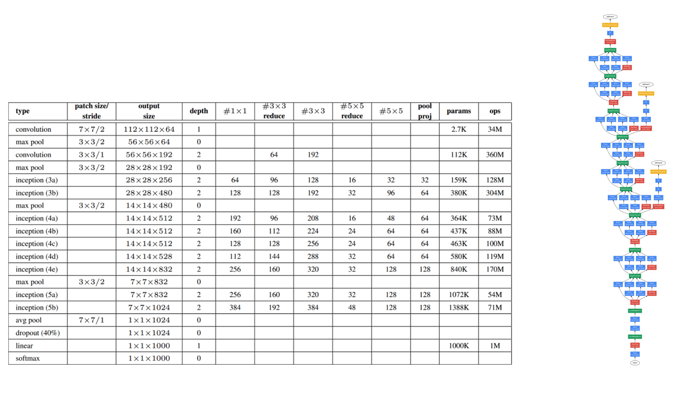

网络结构与优化
学习目标
- 目标
- 了解梯度下降优化的改进版Adam优化器
- 知道使用Batch Normalization归一化防止网络过拟合
- 了解Droupout层的作用
- 应用
- 无
梯度下降优化器容易发生梯度爆炸现象，所以通常对于深度学习来说回去使用改进版本的优化器，如Adam优化等
1、梯度下降不同优化版本
先来看一张图

最朴素的优化算法就是SGD了，梯度下降算法效果也很好，但也存在一些问题选择一个合理的学习速率很难。容易陷入那些次优的局部极值点中
拓展内容（了解）：
- SGD with Momentum
梯度更新规则:Momentum在梯度下降的过程中加入了惯性，使得梯度方向不变的维度上速度变快，梯度方向有所改变的维度上的更新速度变慢，这样就可以加快收敛并减小震荡。
- RMSProp
梯度更新规则:解决Adagrad学习率急剧下降的问题，RMSProp改变了二阶动量计算方法，即用窗口滑动加权平均值计算二阶动量。
- Adam
梯度更新规则:Adam = Adaptive + Momentum，顾名思义Adam集成了SGD的一阶动量和RMSProp的二阶动量。
1.1 使用Adam优化器对比

2、 网络的优化和改进
- 使用改进版SGD算法
- 对于深度网络使用batch normalization或者droupout层
2.1深度网络使用Batch Normalization层
- 目的：提高网络泛化能力，防止过拟合
- BN(Batch Normalization)也属于网络的一层，又称为归一化层。使用BN的好处，包括可以使用更大的学习率,成为CNN的标配

注：在一些大型网络当中使用Droupout，使得部分比例神经元失效
3、 卷积神经网络的拓展了解
3.1 常见网络模型
- GoogleNet

卷积网络结构在imagenet比赛对比

- TensorFlow网络模型API
3.2 卷积网络其它用途
- 图像目标检测
- Yolo：GoogleNet+ bounding boxes
- SSD：VGG + region proposals